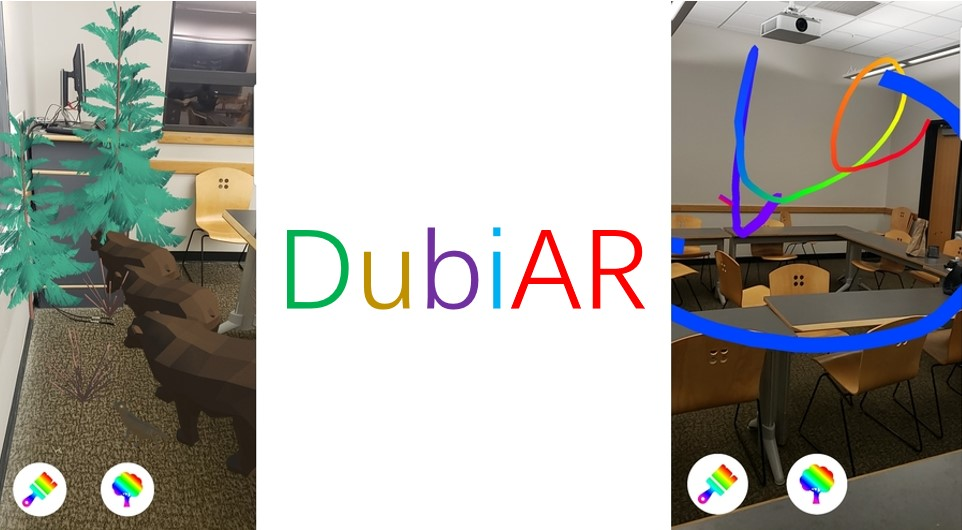
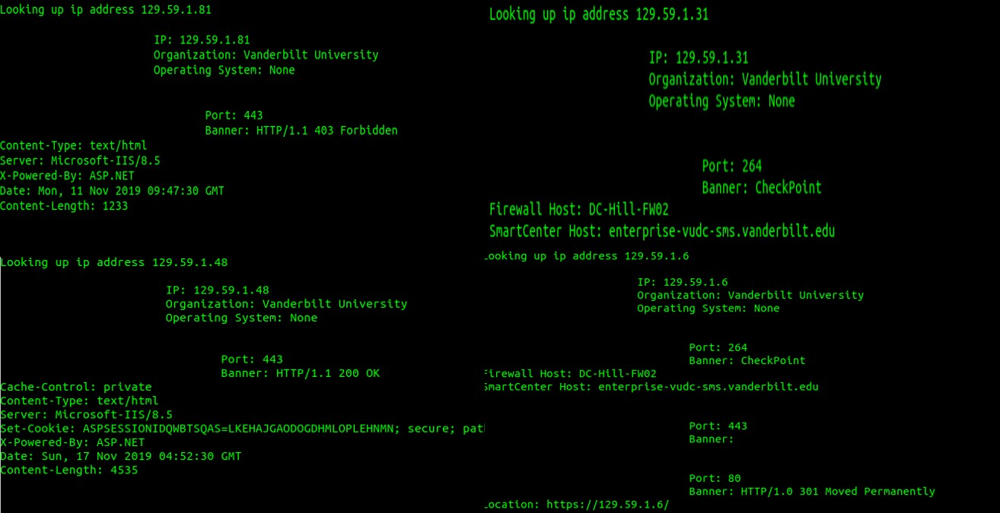
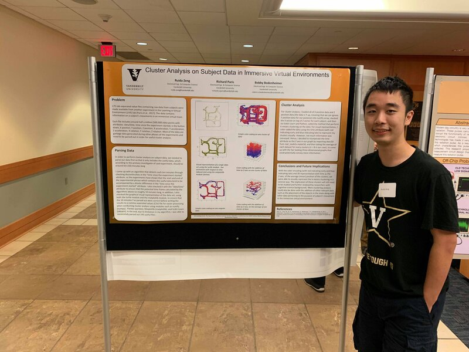

Projects
by categories in reverse chronological order
The Playmakers
A computer vision project that uses image recognition to identify wide-receivers and video recognition to identify offensive plays that the wide-receivers make.
GitHub
Report
stratus
Cloud-based deep learning end-to-end full-stack distributed system for handwritten digits recognition.
GitHub
Paper
DubiAR
An artistic therapeutic application using augmented reality that allows drawing and interacting with nature in 3D-space.
Devpost

IOTScan
A simple project that utilizes the Python Shodan API to scan all IT infrastructure on the Vanderbilt network for vulnerability.
GitHub

Learning in Virtual Environments (LIVE)
Cluster Analysis on Subject Data in Immersive Virtual Environments.
GitHub
